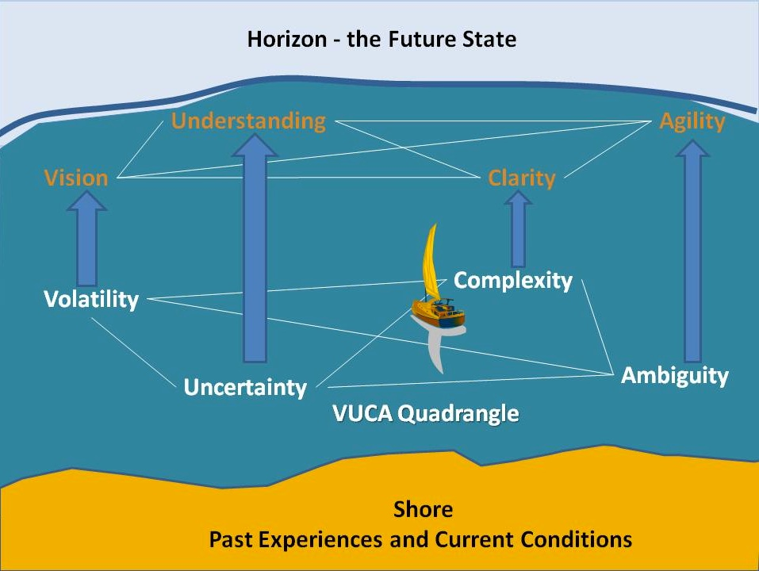

13.7 Construindo o futuro


Imagem: © Carol Mase, Free Management Library, 2011, utilizada com permissão

13.7.1 Fundamentos para a mudança
Esta obra fundamenta a necessidade de ampliação da formação pedagógica em metodologias de ensino, ou de uma abordagem formativa diferenciada para professores e instrutores, com vista a preparar devidamente os estudantes para as exigências da era digital. O argumento estrutura-se da seguinte forma:
1. Regista-se uma pressão crescente do mercado de trabalho, do setor empresarial, dos próprios estudantes e de um volume expressivo de educadores para que os alunos desenvolvam conhecimentos e competências alinhados com as demandas da era digital.
2. As competências intelectuais e práticas exigidas na era digital, período no qual a totalidade dos conteúdos científicos se encontra acessível de forma gratuita na internet, demandam diplomados dotados de especialização em:
- gestão do conhecimento (competência para pesquisar, avaliar criticamente e aplicar a informação);
- conhecimento e competências em TIC;
- competências de comunicação interpessoal, incluindo o uso adequado das redes sociais;
- competências de estudo autônomo e de aprendizagem ao longo da vida;
- competências cognitivas complexas, integrando:
- construção do conhecimento;
- raciocínio lógico;
- análise crítica;
- resolução de problemas;
- criatividade e inovação;
- aprendizagem colaborativa e trabalho em equipe;
- flexibilidade cognitiva e multitarefa.
Estas competências apresentam relevância transversal a todas as áreas científicas, devendo ser integradas em cada currículo disciplinar de forma indissociável. Munidos destas competências, os graduados estarão preparados para navegar num mundo caracterizado pela volatilidade, incerteza, complexidade e ambiguidade (mundo VUCA).
3. Para promover estes conhecimentos e competências, os docentes necessitam de definir metas de aprendizagem claras e selecionar metodologias didáticas adequadas. Dado que a consolidação de competências exige prática e feedback sistemáticos, os estudantes devem usufruir de oportunidades para exercitar tais saberes. Exige-se a superação dos modelos tradicionais expositivos transmissivos a favor de metodologias ativas centradas no aluno, a par de dinâmicas inovadoras de avaliação focadas na verificação de competências e não apenas na memorização de conteúdos.
4. Decorrente da diversidade de perfis de estudantes (desde alunos presenciais em regime de tempo integral, profissionais em processo de formação contínua detentores de graduação superior, até cidadãos que buscam reinserção letiva no sistema de ensino), e pela potencialidade das ferramentas digitais de assegurar a aprendizagem sem limites de espaço e tempo, torna-se necessário disponibilizar uma diversidade de modalidades de ensino, incluindo o presencial no campus, o híbrido e o on-line puro, em ambientes formais e informais de estudo.
5. A transição para o ensino híbrido e on-line e a integração de mídias de aprendizagem ampliam as opções pedagógicas dos docentes. Para otimizar o uso destes recursos, os professores demandam o conhecimento das potencialidades e limites pedagógicos de cada mídia, articulado com teorias de base sobre como o estudante aprende. Isto exige o estudo de:
- investigação científica em ensino e aprendizagem;
- teorias da aprendizagem correlacionadas com diferentes concepções sobre o conhecimento (epistemologia);
- metodologias didáticas diversas com identificação dos seus limites e potencialidades.
Na ausência desta fundamentação básica, revela-se complexo para os docentes superarem o único modelo letivo com que possuem familiaridade de base, assente na aula expositiva seguida de debate, modelo de eficácia reduzida para responder às exigências de desenvolvimento de competências na era digital.
6. O desafio apresenta contornos mais agudos no ensino universitário. Na maioria dos países ocidentais, a contratação de docentes universitários prescinde da exigência de formação pedagógica formal de base. Contudo, a atividade letiva consome no mínimo 40% do tempo de trabalho dos professores de carreira, atingindo rácios superiores para docentes adjuntos temporários ou professores de institutos técnicos. O desafio mantém-se para professores do ensino básico: de que modo assegurar que profissionais experientes desenvolvam as competências necessárias para ensinar com eficácia na era digital?
7. As instituições de ensino superior desempenham papel facilitador ou inibidor na consolidação deste modelo, demandando-se que:
-
assegurem que a totalidade do corpo docente e técnico tenha acesso a ações de formação contínua nas novas mídias e metodologias requeridas para desenvolver as competências dos alunos para a era digital;
-
disponibilizem suporte técnico qualificado em tecnologias de aprendizagem aos docentes;
-
garantam condições de trabalho e dimensões de turmas que viabilizem a aplicação de metodologias ativas compatíveis com a era digital;
-
desenhem estratégias institucionais claras e pragmáticas de apoio à docência digital e híbrida.
13.7.2 Desenhar o seu próprio futuro
Embora as políticas governamentais, o planejamento institucional e o perfil dos estudantes exerçam influência nos resultados letivos, a responsabilidade e a autonomia para a mudança residem prioritariamente na ação de cada docente. A docência configura-se como uma das raras profissões dotadas de elevada margem de escolha metodológica individual sobre o trabalho prático.
Para apoiar o leitor no desenho de propostas letivas adequadas para a era digital, o Capítulo 6, Seção 6.10 disponibiliza um exercício prático para estruturar um ambiente de aprendizagem enriquecido para os seus alunos, aplicando as diretrizes desta obra.
A par de bases teóricas consistentes e de experiência empírica, a imaginação e a visão pedagógica do docente assumem papel preponderante. Esta obra procurou apresentar potencialidades de inovação letiva para o futuro, um amanhã que carece de ser ativamente construído. As exigências do mercado, os dilemas éticos da sociedade contemporânea, as inovações tecnológicas e a heterogeneidade de necessidades letivas constituem variáveis a demandar respostas do corpo docente.
Espera-se que este livro forneça referências úteis para a tomada de decisões pedagógicas neste mundo volátil, incerto, complexo e ambíguo. Encerro apresentando o Cenário I, proposta reflexiva sobre as possibilidades do amanhã. Caberá à imaginação do leitor e de outros docentes desenhar novas práticas de ensino que formarão os cidadãos de que o mundo carecerá no futuro. Espero que esta obra o auxilie nessa caminhada.
Atividade 13.7 Desenhando um cenário futuro para a sua docência
- Proceda à leitura do Cenário I e dos restantes cenários apresentados nesta obra. Desenhe um cenário futuro específico para a sua própria docência, desconsiderando restrições de recursos financeiros ou diretrizes administrativas institucionais do momento.
- Quais transformações organizacionais e administrativas seriam necessárias na sua instituição de ensino para viabilizar a implementação prática do cenário que desenhou?
Esta atividade destina-se a fins de reflexão individual, não contando com feedback associado.
Ideias-Chave
- Regista-se uma pressão crescente do mercado de trabalho, do setor empresarial, dos próprios estudantes e de um volume expressivo de educadores para que os alunos desenvolvam conhecimentos e competências alinhados com as demandas da era digital.
- As competências intelectuais e práticas exigidas na era digital, período no qual a totalidade dos conteúdos científicos se encontra acessível de forma gratuita na internet, demandam diplomados dotados de especialização em:
- gestão do conhecimento (competência para pesquisar, avaliar criticamente e aplicar a informação);
- conhecimento e competências em TIC;
- competências de comunicação interpessoal, incluindo o uso adequado das redes sociais;
- competências de estudo autônomo e de aprendizagem ao longo da vida;
- competências cognitivas complexas, integrando: pensamento crítico, raciocínio lógico, análise crítica, resolução de problemas e criatividade;
- aprendizagem colaborativa e trabalho em equipe;
- flexibilidade cognitiva e multitarefa.
- Para promover estes conhecimentos e competências, os docentes necessitam de definir metas de aprendizagem claras e selecionar metodologias didáticas adequadas. Dado que a consolidação de competências exige prática e feedback sistemáticos, os estudantes devem usufruir de oportunidades para exercitar tais saberes. Exige-se a superação dos modelos tradicionais expositivos transmissivos a favor de metodologias ativas centradas no aluno, a par de dinâmicas inovadoras de avaliação focadas na verificação de competências.
- Decorrente da diversidade de perfis de estudantes (desde alunos presenciais em regime de tempo integral, profissionais em processo de formação contínua detentores de graduação superior, até cidadãos que buscam reinserção letiva no sistema de ensino), e pela potencialidade das ferramentas digitais de assegurar a aprendizagem sem limites de espaço e tempo, torna-se necessário disponibilizar uma diversidade de modalidades de ensino, incluindo o presencial no campus, o híbrido e o on-line puro, em ambientes formais e informais de estudo.
- A transição para o ensino híbrido e on-line e a integração de mídias de aprendizagem ampliam as opções pedagógicas dos docentes. Para otimizar o uso destes recursos, os professores demandam o conhecimento das potencialidades e limites pedagógicos de cada mídia, articulado com teorias de base sobre como o estudante aprende. Isto exige o estudo de: investigação científica em ensino e aprendizagem; teorias da aprendizagem correlacionadas com diferentes concepções sobre o conhecimento (epistemologia); e metodologias didáticas diversas com identificação dos seus limites e potencialidades. Na ausência desta fundamentação básica, revela-se complexo para os docentes superarem o único modelo letivo com que possuem familiaridade de base, assente na aula expositiva seguida de debate.
- O desafio apresenta contornos mais agudos no ensino universitário. Na maioria dos países ocidentais, a contratação de docentes universitários prescinde da exigência de formação pedagógica formal de base. Contudo, a atividade letiva consome no mínimo 40% do tempo de trabalho dos professores de carreira, atingindo rácios superiores para docentes adjuntos temporários ou professores de institutos técnicos. O desafio mantém-se para professores do ensino básico: de que modo assegurar que profissionais experientes desenvolvam as competências necessárias para ensinar com eficácia na era digital?
- As instituições de ensino superior desempenham papel facilitador ou inibidor na consolidação deste modelo, devendo assegurar a formação contínua do corpo docente, disponibilizar suporte técnico qualificado em tecnologias de aprendizagem, garantir condições de trabalho e dimensões de turmas adequadas, e desenhar estratégias institucionais de apoio à docência digital.
- Embora as políticas governamentais, o planejamento institucional e o perfil dos estudantes exerçam influência nos resultados letivos, a responsabilidade e a autonomia para a mudança residem prioritariamente na ação de cada docente.
- A imaginação e a visão pedagógica do docente serão os fatores estruturantes para inventar novas práticas de ensino que formarão os cidadãos de que o mundo carecerá no futuro.